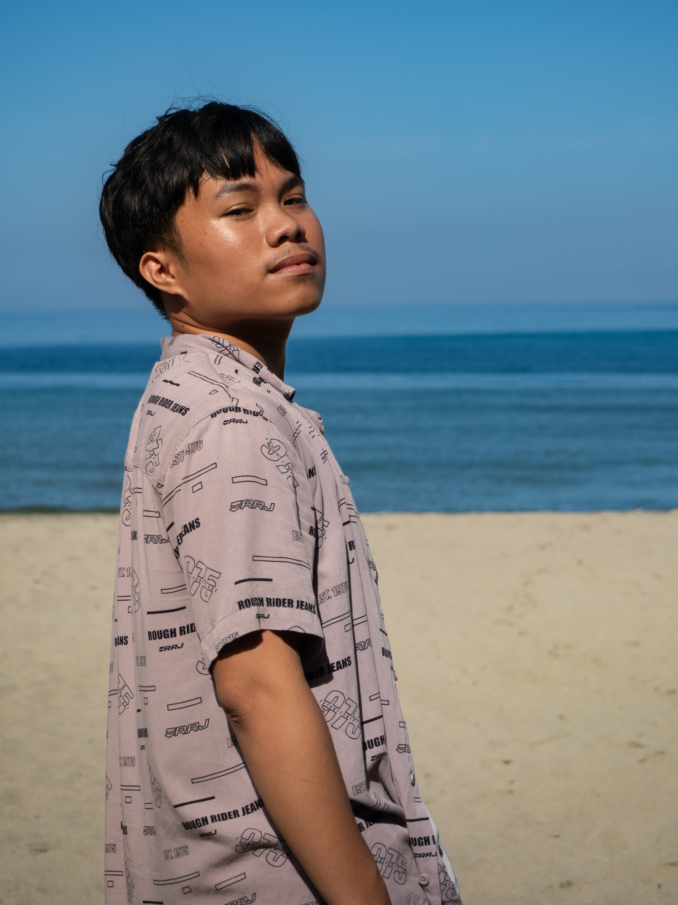

Nhell Leand J. Hipolito
Seeking transcendence through life's paradoxes
About Me

Konnichiwa! My name is Nhell Leand J. Hipolito, but you can call me Lei. I’m a third-year BAMS student at UPOU, and I love learning new things. I might seem a bit quiet at first, but once you get to know me, I’m genuinely fun to be around!
Things I Love
- Bible
- Yumi and Emma (My Pets)
- Photography/Videography
- Volunteering
- Traveling
- Manga/Manhwa/Manhua
Passion Projects
Audio
I've always had a passion for audio engineering, and one of the courses I took last sem finally let me dive in with my groupmates. I served as our field reporter and mix engineer, balancing all 9 dialogue, Foley, and music tracks in REAPER to create a clean, cohesive broadcast.
For more info please visit this website - Click this
Photography
Photography is one of my favorite creative passions. I enjoy walking around with my camera, taking pictures of street life, interesting places I visit, and random candid moments. For me, it's all about catching things as they actually happen without making them look staged.
For more info please visit this website - Click this